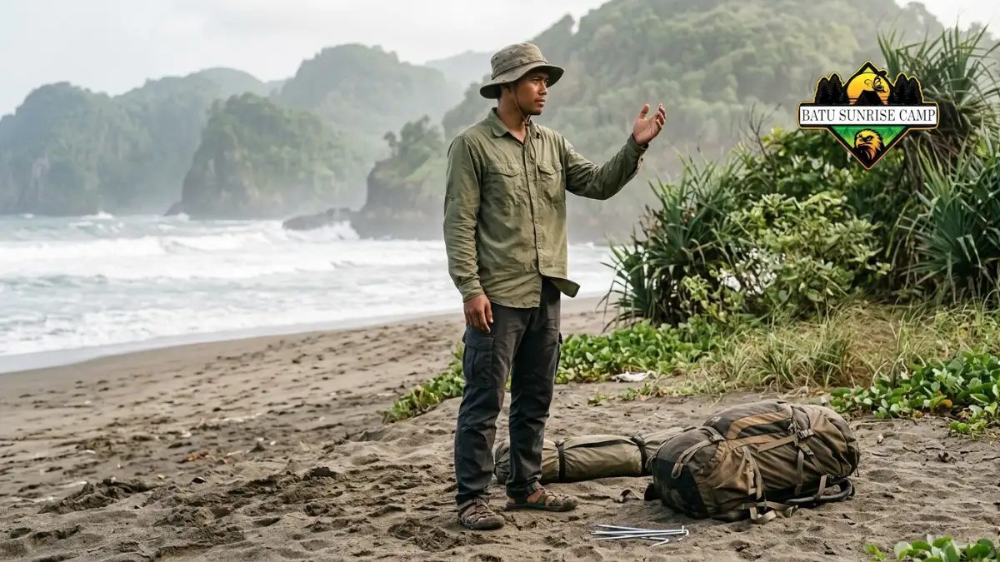

Cara memilih lokasi tenda di area berpasir adalah mencari tanah datar terlindung angin, menjauhi pantai terbuka, dan memeriksa arah angin sebelum memasang tenda.
- Lokasi menentukan seberapa besar paparan angin dan pasir pada tenda.
- Arah angin dapat dibaca dari gerak rumput, bendera, ombak, atau asap.
- Pelindung berupa semak, gundukan, atau bangunan membantu memecah angin.
- Permukaan datar dan padat lebih baik dibanding pasir kering yang gembur.
- Keselamatan, pasang surut, dan aturan setempat harus didahulukan.
Mengapa Lokasi Menentukan Banyaknya Pasir di Dalam Tenda?
Lokasi menentukan seberapa banyak pasir terangkat dan seberapa langsung angin menerpa tenda, sehingga pilihan tempat mengurangi sumber pasir sebelum perlengkapan apa pun dipakai.
Perlengkapan seperti keset atau groundsheet hanya membantu setelah pasir mendekat. Lokasi yang baik mengurangi jumlah pasir yang sampai ke tenda sejak awal.
Tenda di bibir pantai terbuka menerima angin tanpa penghalang, sedangkan tenda di balik gundukan atau vegetasi menerima angin yang sudah melemah.
Perbedaan ini terasa dalam semalam. Di lokasi terbuka, pasir dapat menempel di dinding, menumpuk di bawah flysheet, dan menyelip melalui resleting. Di lokasi terlindung, jumlah pasir yang menempel jauh lebih sedikit sehingga pembersihan pun lebih ringan.
Pemilihan lokasi merupakan bagian dari strategi besar dalam trik mencegah pasir masuk tenda. Lokasi dipilih lebih dulu, baru kemudian cara pemasangan dan kebiasaan di dalam tenda disesuaikan.
Bagaimana Membaca Arah dan Kekuatan Angin di Lokasi?
Arah angin dibaca dari gerak bendera, rumput, ombak, atau asap, sedangkan kekuatannya dapat dibandingkan dengan skala Beaufort untuk menilai apakah lokasi layak dipakai bermalam.

Mengamati arah angin dari gerak rumput dan bendera di lokasi pantai berpasir membantu menentukan posisi tenda yang tepat untuk mengurangi paparan pasir.
Sebelum memasang tenda, luangkan beberapa menit mengamati sekitar. Rumput yang merunduk, ombak yang bergulung ke arah tertentu, atau asap yang miring menunjukkan arah angin. Amati lebih dari satu kali karena arah angin di pantai dapat berubah antara siang dan malam.
Skala Beaufort dari National Weather Service (NOAA), yang masih menjadi rujukan layanan cuaca pada 2026, menggolongkan angin 29 sampai 38 kilometer per jam sebagai kekuatan 5, ketika pohon kecil berdaun mulai bergoyang. Pada kekuatan ini pasir kering sudah mudah beterbangan dan pemasangan tenda menjadi lebih sulit.
Bila perkiraan cuaca menunjukkan angin sekitar angka tersebut atau lebih kencang, pertimbangkan bergeser ke lokasi lain yang lebih terlindung. Perkiraan cuaca dari lembaga resmi membantu menilai kondisi sebelum berangkat.
Pelindung Alami Apa yang Bisa Dimanfaatkan?
Pelindung berupa semak, pepohonan, tebing rendah, gundukan, atau bangunan dapat memecah angin, asalkan lokasi tenda tidak berada di bawah dahan rapuh atau jalur air.
Pelindung angin bekerja dengan memperlambat dan membelokkan udara. Letakkan tenda di sisi yang terlindung, bukan tepat di depan penghalang, karena udara kadang berputar di sisi yang berhadapan langsung dengan penghalang. Sisakan jarak aman agar tenda tidak tertimpa dahan atau runtuhan.
Gundukan pasir dapat membantu, tetapi pasir di puncak sering terangkat angin dan jatuh di sisi belakang. Karena itu, perhatikan arah angin dan jangan mendirikan tenda di titik pasir menumpuk.
Hindari pula bawah pohon bila ada ranting kering atau buah berat yang dapat jatuh. Jauhi cekungan yang dapat menampung air hujan atau menjadi jalur aliran saat pasang. Pelindung yang aman lebih penting daripada pelindung yang sempurna.
Permukaan Tanah Seperti Apa yang Sebaiknya Dipilih?
Pilih permukaan datar dan cukup padat, misalnya pasir lembap, tanah berumput, atau area bertanah keras, karena pasir kering yang gembur mudah terangkat angin.
Pasir lembap lebih berat dan saling menempel sehingga lebih sulit diterbangkan. Tanah berumput menahan butiran dengan akar dan tutupan daun.
Permukaan datar juga mencegah air hujan mengalir ke arah tenda dan membuat posisi tidur lebih nyaman.
Pasir kering yang gembur menimbulkan dua masalah sekaligus. Pasir mudah terangkat angin dan juga membuat pasak kurang kuat menahan. Pembahasan tentang hal ini ada di artikel cara memasang pasak tenda di pasir.
Periksa pula permukaan dari benda tajam seperti pecahan kulit kerang atau ranting yang dapat melubangi lantai tenda.
Bersihkan area sebelum memasang groundsheet. Lantai tenda yang utuh adalah penghalang pertama terhadap pasir dari bawah.
Kapan Waktu yang Tepat Memasang Tenda?
Waktu yang tepat memasang tenda adalah saat angin relatif tenang, biasanya sebelum sore, agar posisi, tali, dan pasak dapat disesuaikan dengan cahaya dan kondisi.
Memasang tenda dalam gelap meningkatkan risiko salah posisi, pasak terpasang asal, dan tali tidak merata. Dengan cahaya yang cukup, Anda dapat memeriksa arah angin, melihat bayangan pelindung, dan menilai permukaan tanah.
Tiba di lokasi lebih awal juga memberi waktu mencoba posisi alternatif. Bila ternyata angin berubah arah, tenda dapat dipindahkan sebelum seluruh barang dibongkar. Memindahkan tenda yang sudah penuh barang jauh lebih merepotkan.
Setelah tenda berdiri, periksa ulang pada sore hari dan sebelum tidur. Pasir dapat bergeser, tali dapat mengendur, dan arah angin dapat berubah. Pemeriksaan singkat ini mencegah masalah yang lebih besar saat malam.
Kesalahan Memilih Lokasi yang Perlu Dihindari
Kesalahan memilih lokasi tenda yang perlu dihindari mencakup berkemah di bibir pantai terbuka, di cekungan yang menampung pasir, dan di jalur angin tanpa penghalang.
Kesalahan pertama adalah memilih lokasi karena pemandangan semata. Tempat terbuka memang luas dan indah, tetapi paling banyak menerima angin berpasir.
Kesalahan kedua adalah mendirikan tenda di cekungan karena terasa terlindung. Cekungan sering menampung pasir yang tertiup, bahkan air saat hujan atau pasang.
Kesalahan ketiga adalah mengabaikan arah angin sehingga pintu menghadap angin. Kesalahan keempat adalah tidak memeriksa perkiraan cuaca.
Kesalahan kelima adalah mendirikan tenda terlalu dekat dengan tenda lain atau jalur lalu lintas sehingga pasir yang terinjak ikut terbawa.
Menghindari kesalahan ini tidak menuntut peralatan khusus, hanya kesediaan mengamati sebelum memutuskan.
Bagaimana dengan Keselamatan dan Aturan Setempat?
Keselamatan dan aturan setempat harus didahulukan: periksa pasang surut, izin pengelola kawasan, peringatan cuaca, dan jarak aman dari air, pohon rapuh, serta jalur kendaraan.
Di pantai, air pasang dapat naik lebih tinggi dari perkiraan, terutama pada kondisi cuaca buruk. Pelajari informasi pasang surut dan pilih lokasi yang jauh dari garis air tertinggi. Pada malam hari, jarak aman ini sulit dinilai sehingga sebaiknya diperiksa saat masih terang.
Banyak kawasan wisata memiliki aturan tentang area berkemah, kebersihan, dan api. Tanyakan kepada pengelola setempat sebelum mendirikan tenda. Mengikuti aturan juga membantu menjaga kelestarian lokasi.
Informasi dalam artikel ini bersifat umum. Kondisi setiap lokasi berbeda, sehingga penilaian di lapangan dan arahan pengelola setempat tetap menjadi acuan utama.

Pertanyaan Umum (FAQ)